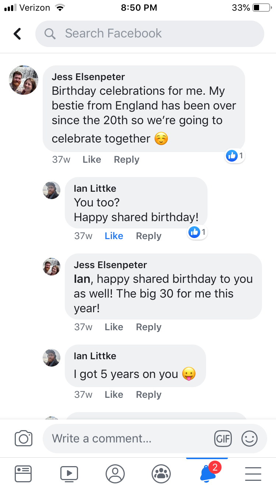
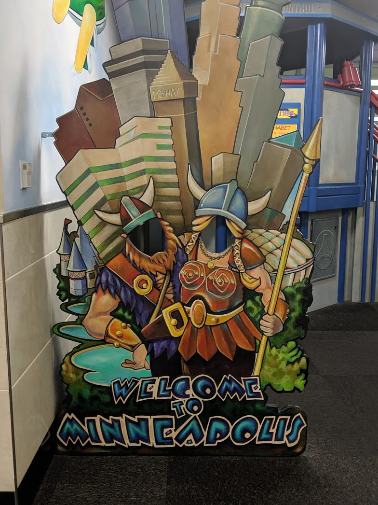

So. how did it all begin? Well, like many modern-day relationships, it started online.
But let’s go back a little bit further than that.
Initially, both of us joined in a like-minded faith singles group. Neither us expected anything to come out of
it. We were so wrong!

The funny thing about our story is that we noticed each other well before we actually started talking.
Maybe that was looking at the map of the U.S. and thinking "That’s really far away" or other logistics,
but eventually, we overcame those factors. This group was a good place to learn about each other through
basic get-to-know you questions, as well as seeing what each other looked like through a safe, modern
platform.
The first time we commented on anything was brief and nothing came of it. Later, we both started adding
pictures for a weekly picture event. That went on for a few months of noticing each other, but we did not
take
any steps outside of "liking" photos. However, one day one of us put a photo up and the other commented,
which
led the other to comment, which led to us engaging in a handful of exchanges months after. Then before
people
got too bored of us messaging back and forth, one of us went for it and sent the other a private message.
Jess Elsenpeter
So, if you don’t mind I thought I’d move our conversation off of that thread and over here. If you
do
mind
that okay no worries.
May 16, 2019, 6:31 PM
Ian Littke
You wanna know more about the weather In Western Washington?
I mean, I
suppose I don't
object.
There's lots of other things to talk about too ~shrug~
May 16, 2019, 6:43 PM
On that fateful day of May 16th 2019, I remember staying up way past my bedtime enjoying a conversation that
came super naturally that left me thinking "Why didn’t you do this sooner?" That’s a whole story in and of
itself that can be saved for a different day.
Ever since since then, things simply clicked. Those first few weeks were spent with several long conversations
on our free nights. It progressed to "We have to meet each other in person soon," but the real question was
"When?"

An opportunity arose when I was heading close by enough for a long weekend that we could meet. However,
that
opportunity was several months out. The fact that we both were interested in meeting up quickly was
awesome!
However, it was still months away. Eventually, it came to the point where we wanted to meet before that
date, so we planned to meet for a weekend a few weeks later.
It was funny how we
planned our second
meet up prior
to
our first,
but it was also great to know we also wanted to see each other a second time.
Ever since that first day of messaging, we never stopped talking - after that first visit we kept planning
additional
visits. As the months went by and more visits happened, everything fell into place in the best way. So that is
our
story -
romantic, a little quirky, but full of fun and adventure. Just how you want a story to start, right?
- Jess
{% endblock %}